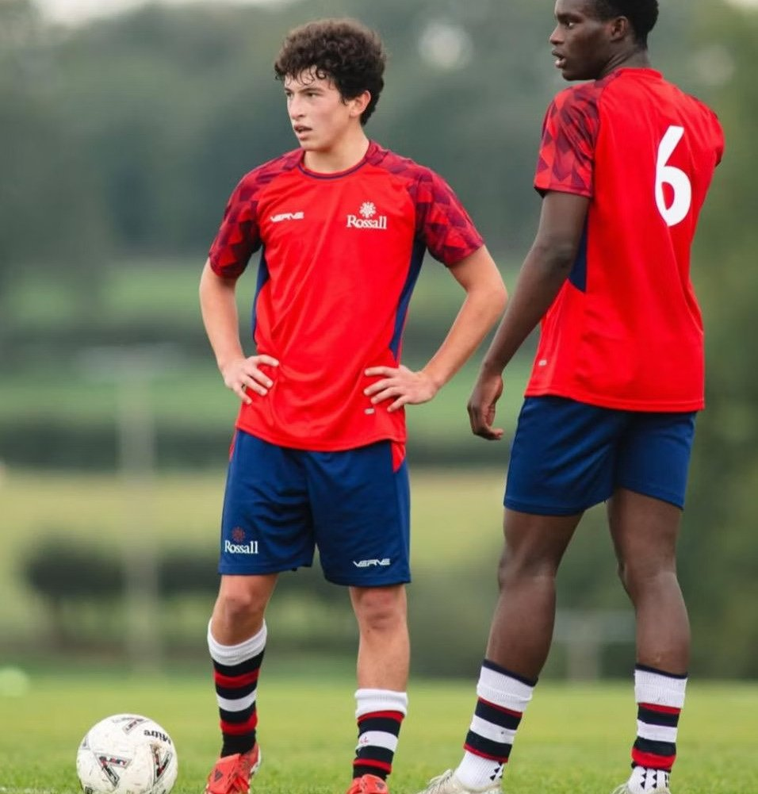

El número 10 que crea el juego. Visión, regate y carácter — formándose entre Inglaterra y España.
The number 10 who makes the game. Vision, dribbling and character — developing between England and Spain.
Mexicano y español, de 17 años, formándose en Rossall School (Inglaterra). Como número 10 natural, lee espacios, encuentra líneas de pase entre defensas y mantiene la presión alta.
Su versatilidad le permite brillar como extremo derecho o como delantero. Con fluidez en español e inglés y un carácter disciplinado, está listo para el fútbol internacional.
Mexican and Spanish, 17, developing at Rossall School (England). A natural number 10, he reads space, finds passing lanes between defenders and sustains high pressure.
His versatility lets him shine as a right winger or forward. Fluent in Spanish and English with a disciplined character, he is ready for international football.

Identifica ventanas de pase entre líneas con una conciencia espacial excepcional.
Identifies passing windows between the lines with exceptional spatial awareness.
Aceleración en los primeros 10 metros y especialista en el 1v1 con alta tasa de regate.
Acceleration over the first 10 metres and a 1v1 specialist with a high dribbling rate.
Ataque central, extremo derecho o "falso 9": se adapta a cualquier rol ofensivo.
Central attack, right wing or "false 9": adapts to any attacking role.
| Competición | Competition | Club | Club | PJ | G | A |
|---|---|---|---|---|---|---|
| ESFA Super League | Rossall School | 5 | 1 | 4 | ||
| Hudl League | Rossall School | 6 | 3 | 2 | ||
| ISFA Boodles Cup | Rossall School | 2 | 1 | 0 | ||
| Liga NacionalNational League | IFA México | 7 | 6 | 3 | ||
| PruebaTrialAceptado ’25Accepted ’25 | Real Valladolid | 1 | 0 | 0 | ||
| Total | Total | 21 | 11 | 9 |
Tiro: finalización precisa por colocación, con potencia sólida. Pase: firme de corto a medio alcance; pase largo efectivo con margen de mejora. Movilidad: aceleración explosiva en los primeros 10 metros.
Shooting: accurate placement-based finishing with solid power. Passing: firm over short-to-medium range; effective long passing with room to grow. Mobility: explosive acceleration over the first 10 metres.
Bachillerato Internacional (IB) en Rossall School, graduación 2027. Más de 350 horas de entrenamiento continuo — resiliencia física y compromiso. Sin lesiones graves registradas.
International Baccalaureate (IB) at Rossall School, graduating 2027. Over 350 hours of continuous training — physical resilience and commitment. No serious injuries on record.
Disponible para pruebas y oportunidades en España e Inglaterra.
Available for trials and opportunities in Spain and England.